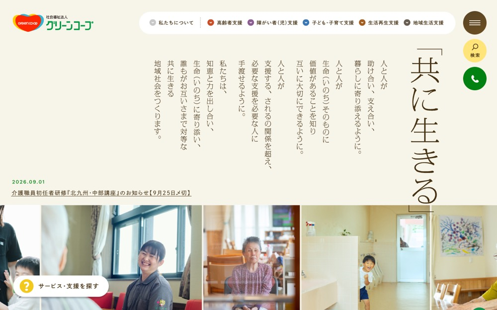

社会福祉法人グリーンコープ
#f7f4e9 の地に #d9ccb5 を大きな面で置く配色。影を使って浮かせる。本文 14px・行間 1.6、セクション間 52px。
配色
文字色は #453112 / #c54117 / #ffffff / #316fad。
どこに使っているか（箇所数）
| 色 | 面 | 文字 | 枠線 | ボタンの地 |
|---|---|---|---|---|
#ffffff |
5 | 7 | 0 | 1 |
#f9f8f3 |
8 | 0 | 0 | 7 |
#ca4e26 |
2 | 0 | 0 | 1 |
#8c5d90 |
1 | 0 | 0 | 0 |
#3a77b4 |
1 | 0 | 0 | 0 |
#453112 |
1 | 86 | 2 | 1 |
#c54117 |
0 | 17 | 0 | 0 |
#316fad |
0 | 2 | 0 | 0 |
#d9ccb5 は
文字
和文
dnp-shuei-gothic-gin-std欧文
dnp-shuei-gothic-gin-std本文
14px / 行間 1.6この見本は Noto Sans JP で表示していますあのイーハトーヴォのすきとおった風
あのイーハトーヴォのすきとおった風
あのイーハトーヴォのすきとおった風
あのイーハトーヴォのすきとおった風
あのイーハトーヴォのすきとおった風
あのイーハトーヴォのすきとおった風
あのイーハトーヴォのすきとおった風
余白とかたち
| コンテンツ幅 | 1200px | |
|---|---|---|
| 読ませる段の幅 | 652px | |
| セクションの上下余白 | 52px | |
| 並びの間隔 | 46 / 65px | |
| 角丸 | 30px（大きな面は 8px） | |
| 影 | rgba(0, 0, 0, 0.25) 0px 4px 4px 0px | |
| 画面幅の切り替え | 1600 / 1400 / 1380 / 1340 / 1239px |
ボタン
お問い合わせ
transparent / 15px / 600 / 角丸 0px
もっと見る
#f9f8f3 / 15px / 600 / 角丸 30px
もっと見る
#453112 / 14px / 500 / 角丸 0px
ページの組み立て
上から順に、実際に並んでいたセクション。高さの比率もそのまま。
1
ヒーロー（画像）
960px
2
1カラム・画像あり
820px
3
5カラム・画像あり
480px
4
6カラム・画像あり
1160px
5
帯・区切り
280px
6
4カラム・画像あり
660px
7
1カラム・画像あり
780px
全7セクション。
部品
囲みらしい繰り返しの箱はなかった。枠で囲まず、余白だけで区切っている。
角丸は 30px だが、完全な円は別扱いで 2 箇所（72px×2）。角を丸めないことと、円のモチーフは両立する。
タグ
角丸 999px ／ 15px
PCとスマホ
同じサイトを390px幅で測り直した値。
| PC 1440px | スマホ 390px | |
| 本文 | 14px / 行間 1.6 | 14px / 行間 1 |
| 見出し | 36px | 14px |
| セクションの上下余白 | 52px | 80px |
| 左右の余白 | — | 20px |
| 並びの間隔 | 65px | 20px |
文字サイズの段は 16 / 15 / 14 / 13 / 12px。セクション余白はPCの154%まで詰める。
画像
4:3・31枚
16:9・13枚
3:4・8枚
58枚。うち 10 枚は画面いっぱいに置く。角丸 0px。